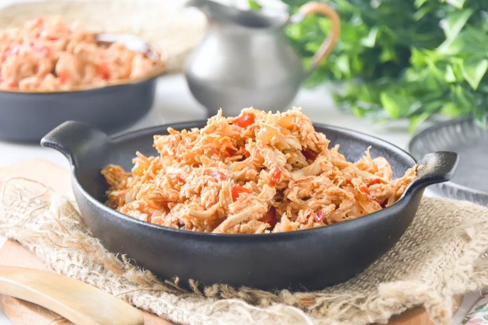
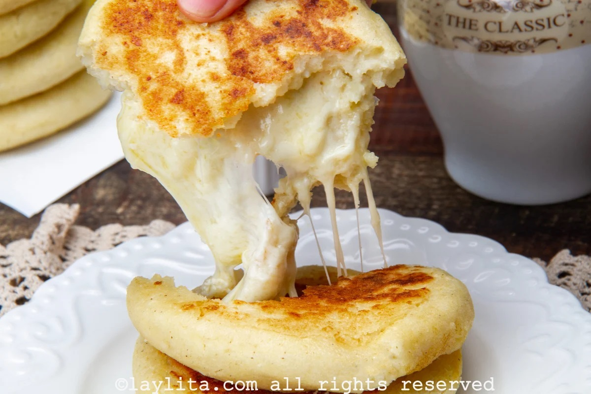
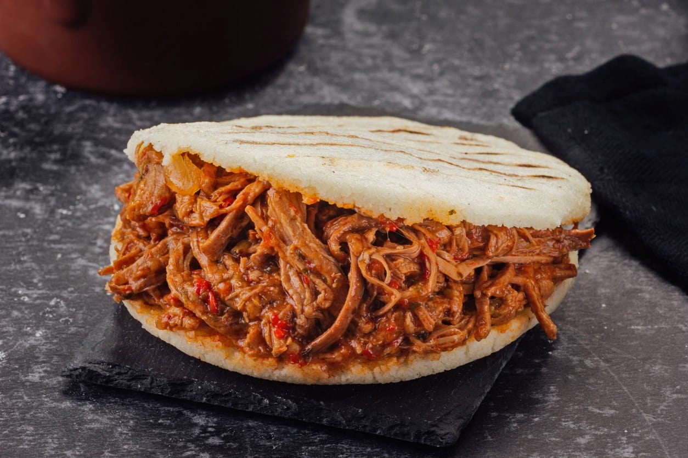
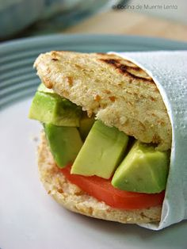
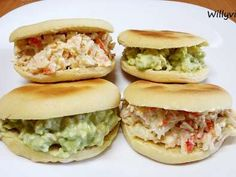
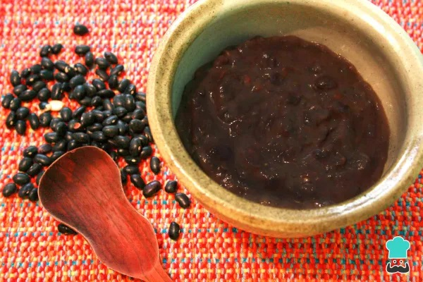

Las Super Arepas Andinas, el otro pan diario de Venezuela
La Tradición de Nuestras Arepas.
Descubre la esencia de nuestras arepas andinas

Arepa de Pollo al Estilo Andino.
Deléitate con una rica arepa rellena de pollo, más

Arepa Andina Clásica.
Esta deliciosa arepa de harina de trigo más

Arepa Mixta.
Una combinación perfecta de sabores, más
Sabor Vegetal
Deliciosas arepas sin carne, llenas de frescura y sabor.

Arepa rellena con aguacate
Rellena de aguacate, cebolla, tomate y crema de aguacate. Ideal para los amantes de sabores intensos y naturales.

Arepa rellena de Queso y Espinacas o con ensalada
Queso suave con frescor de espinacas o ensalada fresca. Nutritiva y sabrosa a cualquier hora.

Arepa andina rellena de Frijoles Negros
Frijoles negros sazonados y salsa picante. Ideal para una comida completa.